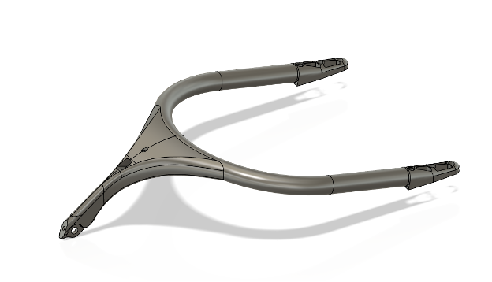
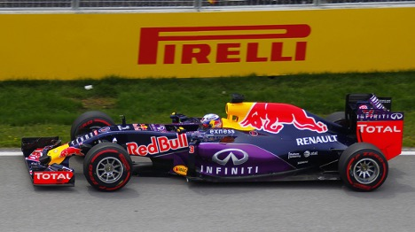

The halo was implemented as a result of the increase of head injuries in the formula series. As cars and tires became heavier, the risk of injury from loose wheels and other large objects became more apparent. The FIA, which is the governing body of the formula series, wanted to implement a safety device. The halo is made out of titanium and is strong enough to withstand major impacts, even with metal.

The halo was surrounded by controversy when it was first made mainstream in 2018 due to the aesthetics. Mercedes AMG team boss Toto Wolff even mentioned he would “take a chainsaw to it” after looking at it. Other team bosses were opposed, but they can’t deny its efficacy today.